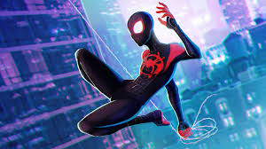

Origenes Miles Morales
Miles es hijo de un padre afroamericano y una madre puertorriqueña. Nació y se crió en Brooklyn dotado con una aptitud para la ciencia al igual que su predecesor, Peter Parker. Miles, después de haber sido galardonado con el último puesto en la Lotería para una beca en la escuela autónoma, visitó a su tío Aarón, contra los deseos de sus padres, quienes pensaban que Aaron era una mala influencia para él. Mientras Miles y su tío discutían las oportunidades que la escuela podría abrir para su futuro, la araña genéticamente mejorada con la Fórmula OZ que Aaron había robado de Oscorp salió de su bolsa y mordió a Miles en la mano, lo que le hizo perder el conocimiento y convulsionar. Más tarde, cuando Miles despierta, Aaron es confrontado por Jefferson Davis el padre de Miles. Durante esta breve discusión, Miles huye del apartamento de Aaron. Mientras se ocultaba de su padre, Miles descubrió que había obtenido habilidades sobrehumanas como camuflaje, agilidad mejorada, y una especie de rayo aturdidor..
Después de decirle a su mejor amigo Ganke Lee que tenía poderes, Miles no tuvo más opción que usar sus habilidades para salvar a un grupo de personas atrapadas en el interior de un edificio en llamas. Luego, le dice a su amigo que no está hecho para ser un superhéroe y no quiere hacer algo así de nuevo. Tiempo después, mientras Miles y Ganke quienes se están adaptando a la vida en la Academia Brooklyn Visions, son citados al gimnasio de la escuela junto al resto de estudiantes en medio de la noche. Allí se les informa que el puente Queensboro se ha convertido en una zona guerra de superhéroes y que Spider-Man fue herido tras recibir un disparo. Miles al escuchar esto se escapa de la Academia, y va al lugar donde Spider-Man está luchando con el Duende Verde y llega justo cuando Peter muere en los brazos de sus seres queridos.
Luego él y Ganke asisten al funeral de Spider-Man y Miles habla con Gwen Stacy, preguntándole por qué Peter se convirtió en un superhéroe. Ella le explica que lo hizo porque, "Un gran poder conlleva una gran responsabilidad" y vivió su vida bajo esa premisa. Con su nueva inspiración, Miles decide asumir el legado de Spider-Man en honor a Peter Parker..